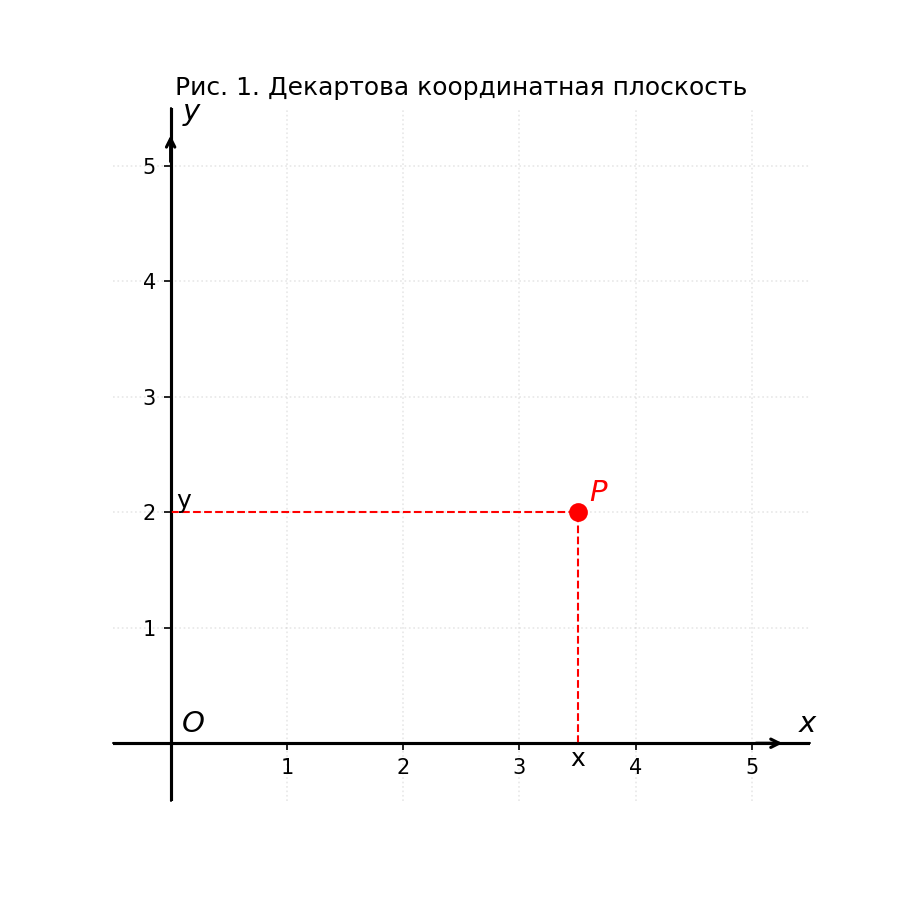
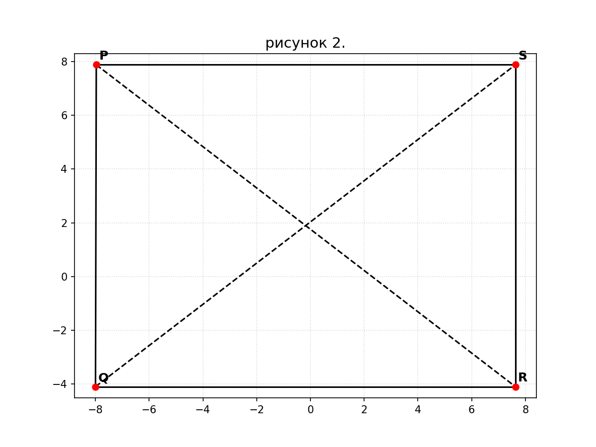
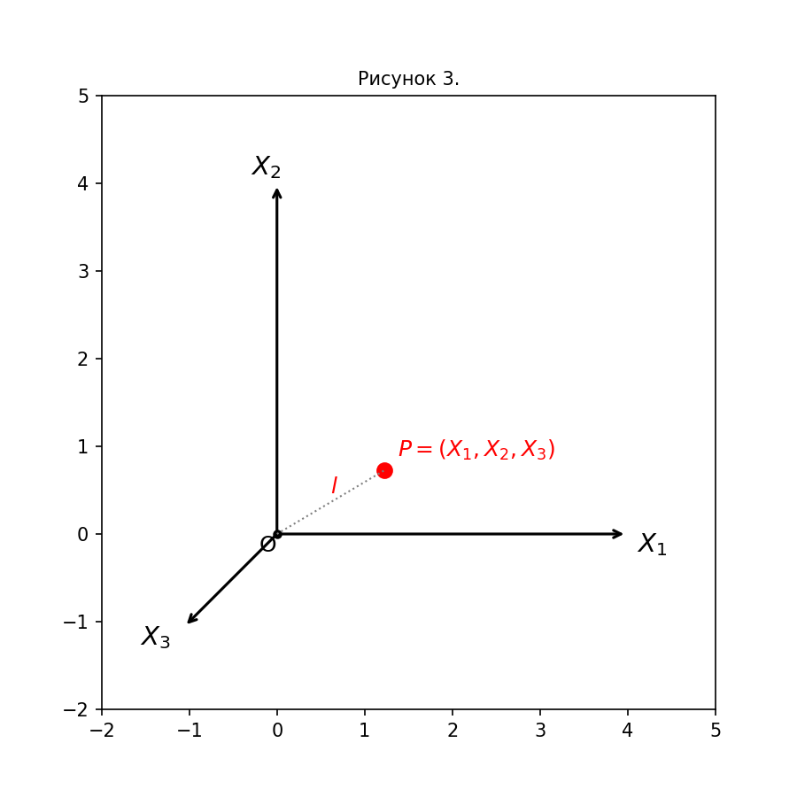

Основы проективной геометрии#
Проективная геометрия изучает свойства инцидентности, т. е. те свойства, которые сохраняются при растяжениях, переносах и вращениях плоскости. Поэтому при аксиоматическом построении теории мы вынуждены игнорировать понятия расстояния и угла.
Одним из самых важных примеров в этой книге является действительная проективная плоскость, и здесь мы займемся выяснением того, какие из знакомых нам фактов и методов (относящихся к евклидовой и аналитической геометрии) остаются справедливыми и для проективной плоскости, а какие теряют силу.
Аффинная геометрия#
Начнем с некоторых наиболее простых фактов обычной плоской геометрии, которые мы примем в качестве аксиом при синтетическом построении теории.
Определение. Аффинной плоскостью называют множество элементов, именуемых точками, и систему его подмножеств, именуемых прямыми, причем должны выполняться три формулируемые ниже аксиомы А1 — А3.
Мы будем говорить, что «\(P\) лежит на \(l\)» или «\(l\) проходит через \(P\)», если точка \(P\) есть элемент подмножества (прямой) \(l\).
А1. Для любых двух различных точек \(P\) и \(Q\) существует одна и только одна прямая, проходящая через них.
Две прямые называются параллельными, если они совпадают или не имеют общих точек.
А2. Для любых заданных прямой \(l\) и точки \(P\) существует одна и только одна проходящая через \(P\) прямая \(m\), параллельная \(l\).
А3. Существуют три неколлинеарные точки.
(Точки \(P_1, ..., P_n\) называются коллинеарными, если существует такая прямая \(l\), что все эти точки ей принадлежат.)
Обозначения#
Символ |
Значение |
|---|---|
\(P\) ≠ \(Q\) |
\(P\) не совпадает с \(Q\) |
\(P\) ∈ \(l\) |
\(P\) принадлежит \(l\) |
\(l\) ∩ \(m\) |
пересечение \(l\) и \(m\) |
\(l\) ∥ \(m\) |
\(l\) параллельна \(m\) |
∀ |
для каждого |
∃ |
существует |
⇒ |
влечет за собой |
⇔ |
тогда и только тогда |
Пример. Обычная евклидова плоскость \(ℝ^2\) удовлетворяет аксиомам А1–А3, т. е. является аффинной плоскостью.

На этой плоскости удобно ввести декартовы координаты, как в аналитической геометрии (рис. 1). При этом точка \(P\) представится парой \((x, y)\), где \(x\) и \(y\) — действительные числа. (Мы будем писать \(x, y \in \mathbb{R}\)).
Предложение 1.1. Параллельность является отношением эквивалентности.
Определение. Отношение ∼ есть отношение эквивалентности, если имеют место следующие три свойства:
рефлексивность: \(a\) ∼ \(a\),
симметричность: \(a\) ∼ \(b\) ⇔ \(b\) ∼ \(a\),
транзитивность: \(a\) ∼ \(b\) и \(b\) ∼ \(c\) ⇔ \(a\) ∼ \(c\).
Доказательство. Нам надо проверить следующие три утверждения:
каждая прямая параллельна сама себе (по определению);
\(l\) ∥ \(m\) ⇒ \(m\) ∥ \(l\) (по определению);
если \(l\) ∥ \(m\) и \(m\) ∥ \(n\), то \(n\) ∥ \(l\).
Если \(l\) = \(n\), то доказательства не требуется. Если \(l\) ≠ \(n\) и существует точка \(P\) ∈ \(l\) ∩ \(n\), то прямые \(l\) и \(n\) обе ∥ \(m\) и проходят через \(P\), что невозможно по аксиоме A₂. Отсюда мы заключаем, что \(l\) ∩ \(n\) = ∅ (пустое множество), т. е. \(l\) ∥ \(n\).
Предложение 1.2. Две различные прямые имеют не более одной общей точки.
Это следует из того, что если две прямые \(l\) и \(m\) имеют две общие точки \(P\) и \(Q\), \(P ≠ Q\), то \(l = m\) по аксиоме A₁.
Пример. Аффинная плоскость имеет по крайней мере четыре различные точки; плоскость, состоящая ровно из четырех точек, существует.
Действительно, в силу A₃ на плоскости есть три неколлинеарные точки; обозначим их через \(P\), \(Q\), \(R\). Согласно A₂, существует прямая \(l\), проходящая через \(P\) и параллельная прямой \(QR\), соединяющей \(Q\) и \(R\) (эта прямая существует по A₁). Точно так же доказывается существование прямой \(m\) ∥ \(PQ\), проходящей через \(R\).
Покажем теперь, что \(l\) не параллельна \(m\) (\(l ≠ m\)). Если бы это было не так, то мы бы имели
откуда \(PQ\) ∥ \(QR\) по предложению 1.1. Но это невозможно, так как \(PQ ≠ QR\), а \(Q\) принадлежит каждой из этих прямых.
Отсюда следует, что \(l\) и \(m\) пересекаются в некоторой точке \(S\). Так как \(S\) принадлежит прямой \(m\), параллельной \(PQ\) и не совпадающей с ней, то \(S\) ≠ \(P\) и \(S\) ≠ \(Q\). Точно так же \(S\) ≠ \(R\). Таким образом, четвертая точка \(S\) необходимо должна существовать, и наше первое утверждение доказано.

Теперь рассмотрим прямые \(PR\) и \(QS\). Они могут пересекаться (докажите, например, что это так в случае действительной проективной плоскости). Но они могут и не пересекаться — это не противоречит аксиомам.
В этом случае мы получаем аффинную плоскость, содержащую ровно четыре точки \(P\), \(Q\), \(R\), \(S\) и шесть прямых \(PQ\), \(PR\), \(PS\), \(QR\), \(QS\), \(RS\) (см. рис. 2). Легко видеть, что аксиомы A1–A3 здесь выполняются. Таким образом, мы получили аффинную плоскость, содержащую наименьшее возможное число точек, а именно четыре.
Определение. Множество прямых образует пучок, если
все прямые этого множества проходят через некоторую точку \(P\),
все прямые множества параллельны некоторой прямой \(l\); в этом случае говорят, что задан пучок параллельных прямых.
В дальнейшем нам понадобится также следующее
Определение. Взаимно однозначным соответствием между двумя множествами \(x\) и \(y\) называется такое отображение \(T\) : \(x\) → \(y\) (т. е. правило \(T\), по которому каждому элементу \(x\) ∈ \(x\) ставится в соответствие элемент \(T(x) = y ∈ y\)), что
и
(последнее читается: для каждого \(y\) ∈ \(y\) существует элемент \(x\) ∈ \(x\), такой, что \(T\)(\(x\)) = \(y\)).
Идеальные точки и проективная плоскость#
Теперь пополним аффинную плоскость некоторыми «бесконечными точками» и придем таким образом к понятию проективной плоскости.
Пусть задана аффинная плоскость \(a\). Для каждой прямой \(l\) ∈ \(a\) обозначим через [\(l\)] пучок параллельных ей прямых и назовем [\(l\)] идеальной или бесконечной точкой направления \(l\). Мы будем записывать это так: \(P\)* = [\(l\)].
Определим пополнение \(S\) плоскости \(a\) следующим образом. Точками \(S\) являются все точки плоскости \(a\) и все идеальные точки \(a\) (направления). Прямыми \(S\) служат
обычные прямые \(l\) плоскости \(a\), дополненные соответствующими бесконечными точками \(P\)* = [\(l\)];
«бесконечная прямая», состоящая из всех бесконечных точек плоскости \(a\).
Мы сейчас убедимся, что \(S\) есть проективная плоскость в смысле следующего определения:
Определение. Проективной плоскостью \(S\) называют множество, элементы которого именуются точками, и набор его подмножеств, именуемых прямыми, если при этом выполняются следующие четыре аксиомы.
П1. Через две различные точки \(P\) и \(Q\) плоскости \(S\) можно провести одну и только одну прямую.
П2. Любые две прямые пересекаются по меньшей мере в одной точке.
П3. Существуют три неколлинеарные точки.
П4. Прямая содержит по меньшей мере три точки.
Предложение 1.3. Описанное выше пополнение \(S\) аффинной плоскости \(a\) является проективной плоскостью.
Доказательство. Проверим выполнение четырех аксиом П1—П4.
П1. Пусть \(P\), \(Q\) ∈ \(S\).
Если \(P\) и \(Q\) — обыкновенные точки плоскости \(a\), то через них можно провести только одну прямую из \(a\). Точки \(P\) и \(Q\) не принадлежат бесконечной прямой «плоскости» \(S\); поэтому и на \(S\) через них можно провести единственную прямую.
Если \(P\) — обыкновенная точка \(a\), а \(Q\) = [\(l\)] — идеальная точка, то по аксиоме А2 существует прямая \(m\), такая, что \(P\) ∈ \(m\) и \(m\) ∥ \(l\), т. е. \(m\) ∈ [\(l\)], так что \(Q\) принадлежит пополнению прямой \(m\) до прямой из \(S\). Прямая \(m\), очевидно, — единственная прямая «плоскости» \(S\), проходящая через \(P\) и \(Q\).
Если \(P\) и \(Q\) — идеальные точки, то через них проходит бесконечная прямая множества \(S\) и только эта прямая.
П2. Пусть заданы прямые \(l\) и \(m\).
Если \(l\) и \(m\) — обыкновенные прямые и \(l\) ≠ \(m\), то они пересекаются в некоторой точке из \(a\). Если \(l\) ∥ \(m\), то они пересекаются в идеальной точке \(P\)* = [\(l\)] = [\(m\)].
Если \(l\) — обыкновенная прямая, а \(m\) — бесконечная прямая, то они пересекаются в бесконечной точке \(P\)* = [\(l\)].
П3 непосредственно следует из А3. Необходимо только проверить, что если \(P\), \(Q\), \(R\) неколлинеарны в \(a\), то они не будут коллинеарными и в \(S\). Действительно, в \(S\) существует только одна (бесконечная) прямая, не принадлежащая \(a\), но точки \(P\), \(Q\), \(R\) ей не принадлежат.
П4. Каждая прямая плоскости \(a\) содержит хотя бы две точки (см. задачу 1 в конце книги). Но в \(S\) каждая прямая содержит еще и бесконечную точку; поэтому она содержит не менее трех точек.
Примеры. 1. Пополняя аффинную плоскость евклидовой геометрии, мы получим действительную проективную плоскость.
Пополняя аффинную плоскость из четырех точек, мы получаем проективную плоскость из семи точек.
Построим еще один пример проективной плоскости. Пусть ℝ³ — обыкновенное трехмерное евклидово пространство, и пусть \(O\) — некоторая точка из ℝ³. Обозначим через \(l\) множество прямых, проходящих через \(O\).
Точкой в \(l\) мы назовем прямую из ℝ³, проходящую через \(O\), а прямой — множество прямых, проходящих через \(O\) и лежащих в некоторой плоскости.
Множество \(l\) удовлетворяет аксиомам П1–П4 (проверка этого предоставляется читателю) и, следовательно, является проективной плоскостью.
Однородные координаты на действительной проективной плоскости#
Теперь мы дадим аналитическое определение действительной проективной плоскости. Вернемся к рассмотренному выше примеру с прямыми в ℝ³. Мы будем представлять точку \(P\) из \(S\), соответствующую прямой \(l\), некоторой точкой \((x_1, x_2, x_3)\) прямой \(l\), не совпадающей с точкой \(O\) (0, 0, 0) (рис. 3). Числа \(x_1, x_2, x_3\) являются однородными координатами точки \(P\). Любая другая точка прямой \(l\) имеет координаты \((λx_1, λx_2, λx_3)\), где \(λ ∈ ℝ, λ ≠ 0\). Таким образом, \(S\) есть множество троек \((x_1, x_2, x_3)\) действительных чисел, не все из которых равны нулю, причем
тройки \((x_1, x_2, x_3)\) и \((x_1′, x_2′, x_3′)\) представляют одну и ту же точку из \(S\) ⇔
⇔ ∃ \(λ\) ∈ ℝ, такое, что \(x_i′ = λx_i\) для \(i = 1, 2, 3\).
Поскольку уравнение плоскости из ℝ³, проходящей через начало координат \(O\), записывается в виде
его можно рассматривать также как уравнение прямой из \(S\) в однородных координатах.

Определение. Две проективные плоскости \(S\) и \(S′\) называются изоморфными, если существует взаимно однозначное отображение \(T\) : \(S\) → \(S′\), которое переводит коллинеарные точки в коллинеарные.
Предложение 1.4. Проективная плоскость \(S\), описанная выше с помощью однородных действительных координат, изоморфна проективной плоскости, полученной пополнением обычной аффинной плоскости евклидовой геометрии.
Доказательство. Пусть, с одной стороны, дана плоскость \(S\), точки которой задаются однородными координатами \((x_1, x_2, x_3)\), \(x_i\) ∈ ℝ, не все \(x_i\) = 0. С другой стороны, мы имеем евклидову плоскость \(a\) с декартовыми координатами \(x\), \(y\). Обозначим ее пополнение через \(S′\). Точками \(S′\) являются 1) точки \((x, y)\), \(x\), \(y\) ∈ ℝ, из \(a\); 2) идеальные точки. Пучок параллельных прямых однозначно определяется угловым коэффициентом \(m\) соответствующей прямой, который может быть равен любому действительному числу или ∞. Таким образом, бесконечные точки описываются координатами \(m\).
Теперь мы определим отображение \(T\) : \(S\) → \(S′\), которое установит изоморфизм \(S\) на \(S′\). Пусть \((x_1, x_2, x_3) = P\) — некоторая точка из \(S\).
Если \(x_3\) ≠ 0, то за \(T(P)\) мы примем точку из \(a\) с координатами \(x = x_1/x_3, y = x_2/x_3\). Отметим, что точка \(T(P)\) определена однозначно, так как если мы заменим \((x_1, x_2, x_3)\) на \((λx_1, λx_2, λx_3)\), то \(x\) и \(y\) не изменятся. При этом таким образом мы можем получить любую точку из \(a\). Действительно, точка с координатами \((x, y)\) является образом точки плоскости \(S\) с однородными координатами \((x, y, 1)\).
Если \(x_3 = 0\), то за \(T(P)\) мы примем идеальную точку из \(S′\) с угловым коэффициентом \(m = x_2/x_1\). Заметим, что это отношение всегда имеет смысл, так как \(x_1\) и \(x_2\) оба равняться нулю не могут. При этом снова, если мы заменим \((x_1, x_2, 0)\) на \((λx_1, λx_2, 0)\), то \(m\) не изменится. С другой стороны, мы так можем получить любое значение \(m\): если \(m ≠ ∞\), то мы выбираем точку \(T(1, m, 0)\), а если \(m = ∞\), то \(T(0, 1, 0)\).
Таким образом, \(T\) устанавливает взаимно однозначное соответствие между \(S\) и \(S′\). Нам остается проверить, что \(T\) переводит коллинеарные точки в коллинеарные. Прямая \(l\) из \(S\) задается уравнением
Предположим, что \(a_1\) и \(a_2\) не равны одновременно нулю. Тогда образом точки с координатами \(x_1 = λa₂, x_2 = –λa₁, x_3 = 0\) будет идеальная точка, заданная угловым коэффициентом \(m = –a₁/a₂\). Она, очевидно, принадлежит прямой из \(S′\), содержащей «конечные» точки — образы точек прямой \(l\).
Если \(a₁ = a₂ = 0\), то \(l\) имеет уравнение \(x_3 = 0\). Любая точка из \(S\), принадлежащая этой прямой, переходит в идеальную точку из \(S′\); совокупность таких точек образует бесконечную прямую.
Ч. т. д.
Замечание. С этого момента мы не будем различать изоморфные плоскости, рассмотренные в предложении 1.4, и будем называть любую из них действительной проективной плоскостью. Это самый важный пример той аксиоматической теории, которую мы будем развивать в дальнейшем, и мы часто будем иллюстрировать получаемые результаты на этом примере. Более того, теоремы, доказанные для действительной проективной плоскости, будут иногда подсказывать результаты общей аксиоматической теории. Однако, доказывая какую-либо теорему в аксиоматической теории, мы должны исходить только из аксиом и из ранее доказанных теорем. Если мы обнаружим, что некое утверждение для действительной проективной плоскости справедливо, то это, несомненно, свидетельствует в пользу данного утверждения, но в принятой нами установке еще не составляет его доказательства.
Отметим также, что если из действительной проективной плоскости удалить произвольную прямую, то получится евклидова (точнее, аффинная) плоскость.